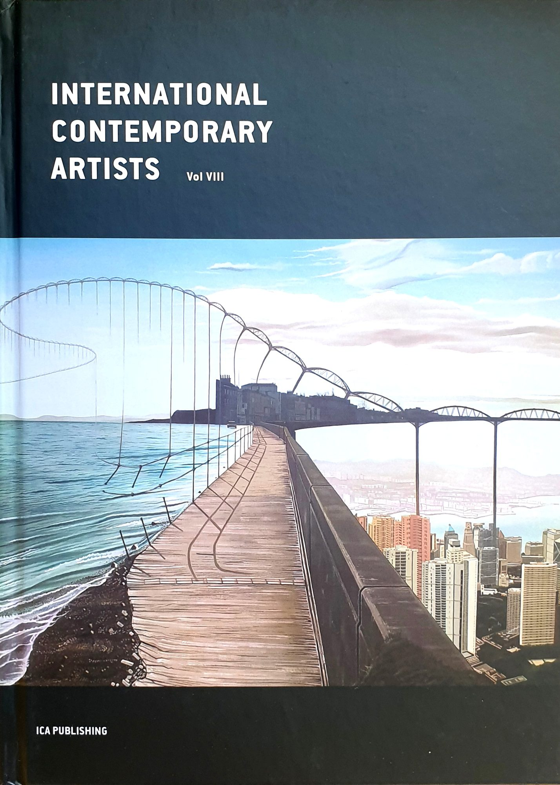
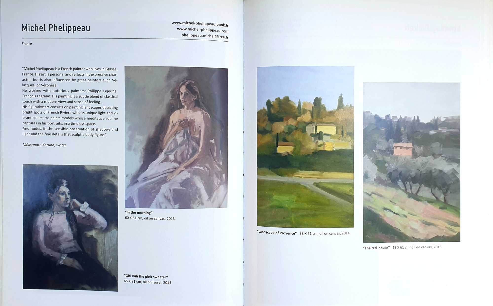
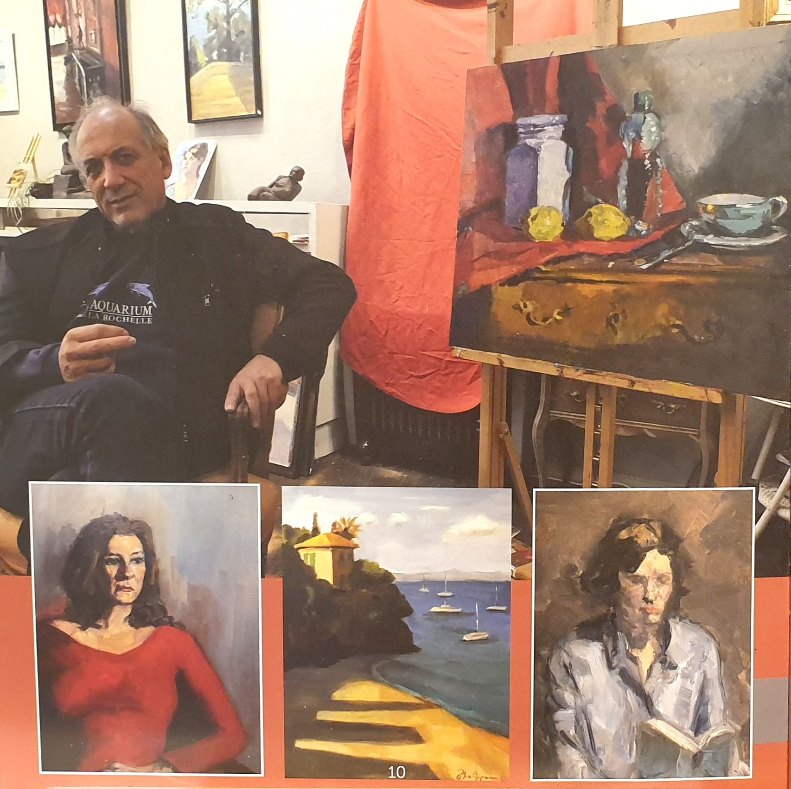
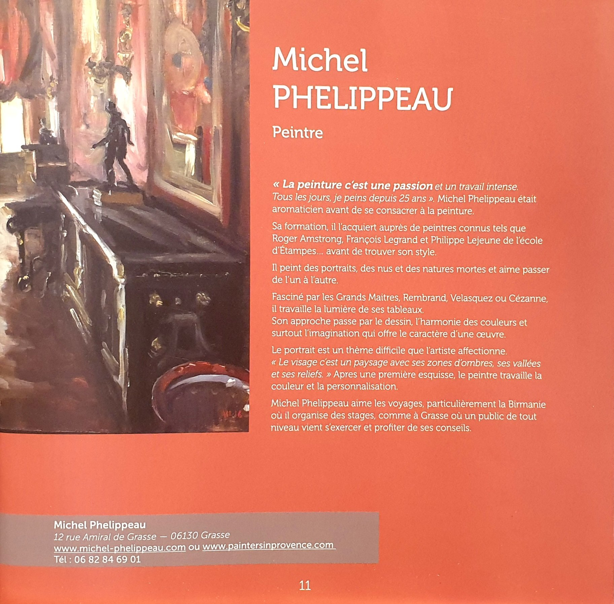

Presseschau
Presse & Veröffentlichungen
Pratique des Arts
2019 erschien Michel Phelippeau auf dem Titelbild von Pratique des Arts (Nr. 149), begleitet von einem 6-seitigen Bericht über sein Werk.

In diesem Interview blickt Michel Phelippeau auf seinen Werdegang zurück: seine Ausbildung als Chemiker-Parfümeur, seinen Umzug nach Grasse im Jahr 1990 und die Verbindung, die er zwischen der Komposition eines Duftes und der eines Gemäldes zieht. Er erläutert seine Arbeitsmethode — seine "Winkelmethode", den Umgang mit warmen und kalten Farben, seine Palettentechnik — sowie die Workshops, die er jeden Sommer in der Provence und neuerdings auch in Myanmar leitet. Der Artikel zeigt zudem in sieben Schritten die vollständige Entstehung eines Gemäldes der Stadt Grasse.

Diese Seite stellt Michel Phelippeau vor: Als Mitglied der Fondation Taylor malt er seit zwanzig Jahren, genährt vom Studium Rembrandts, Velázquez', Cézannes und Balthus'. Er erhielt den Éclat-de-Verre-Preis bei der Biennale de Versailles und stellte im Salon de la Marine sowie im Salon d'Automne in Paris aus. 2016 gründete er den Espace Michel Phelippeau in Grasse.

Das Interview beginnt mit dem Werdegang von Michel Phelippeau, geboren 1958 in Orsay: Schon als Jugendlicher von der Malerei begeistert, zog er 1990 als Chemiker-Parfümeur (eine "Nase") nach Grasse, bevor er sich bei mehreren Malern ausbildete, darunter Philippe Lejeune von der École d'Étampes.

Michel Phelippeau erklärt, warum er ausschließlich nach der Natur malt, nie nach Fotos: Licht und Farben ändern sich zu schnell, um von einem Schnappschuss festgehalten zu werden. Ein Kasten zur Farbharmonie beschreibt seine Arbeitsweise auf der Palette, ausgehend von den Himmelstönen, um schrittweise das ganze Bild aufzubauen.

Diese Seite stellt seine "Winkelmethode" vor: gerade Linien und präzise Winkel (60°, 70°, 30°) statt Kurven oder rechte Winkel. Michel Phelippeau beschreibt zudem seine einwöchigen Workshops in kleinen Gruppen in Grasse zu verschiedenen Themen sowie sein bevorzugtes Material: Leinenleinwand, Palettenmesser und verschiedene Pinsel.

Diese Seite eröffnet die Schritt-für-Schritt-Reportage "Die Stadt Grasse": Michel Phelippeau beschreibt die ersten beiden Schritte der Bildentstehung, von der Pinselskizze bis zum Auftragen der Himmels- und Meerestöne auf der Palette. Ein Kasten widmet sich zudem seiner Vorliebe für große Pinsel, inspiriert von Velázquez.

Fortsetzung und Abschluss der Schritt-für-Schritt-Reportage: die Schritte 3 und 4 (beleuchtete und schattierte Bereiche) bis zum letzten Schritt, in dem Michel Phelippeau die Konstruktionen und Schatten verfeinert. Er betont, dass er nie länger als zweieinhalb bis drei Stunden im Freien an derselben Leinwand arbeitet, da sich das Licht zu schnell ändert.
© Pratique des Arts / Diverti Éditions. Auszüge zu Pressezwecken wiedergegeben; alle Rechte beim Verlag.
International Contemporary Artists (Vol. VIII)
Michel Phelippeau ist in diesem von ICA Publishing herausgegebenen Sammelband vertreten, gemeinsam mit zeitgenössischen Künstlern aus aller Welt.

Michel Phelippeau wird als französischer Maler mit Wohnsitz in Grasse vorgestellt, dessen persönliches und ausdrucksstarkes Werk von großen Meistern wie Velázquez und Veronese inspiriert ist. Ausgebildet bei den Malern Philippe Lejeune und François Legrand, verbindet er einen klassischen Ansatz mit moderner Sensibilität. Sein figuratives Werk vereint lichtdurchflutete Landschaften der Côte d'Azur, Porträts, die die meditative Seele seiner Modelle in einem zeitlosen Raum einfangen, sowie Akte, die Licht und Schatten mit großer Feinheit erkunden.

© ICA Publishing. Auszüge zu Pressezwecken wiedergegeben; alle Rechte beim Verlag.
Das Buch — Senteurs picturales en Birmanie
Dieses 2020 bei Diverti Éditions erschienene 160-seitige Buch zeichnet in Gemälden eine Reise durch Myanmar nach.

In diesem Buch zeigt Michel Phelippeau die Gemälde, die er zwischen 2018 und 2020 in Myanmar (Birma) angefertigt hat. Schon bei seiner Ankunft in Yangon war er von der Atmosphäre des Landes eingenommen: den Düften, Farben, der Kleidung, den Gebäuden, dem Vogelgezwitscher, den Lautsprechergesängen, der Vielfalt und der Freundlichkeit der Menschen. All diese Eindrücke versuchte er in Gemälden festzuhalten, die er im Freien, direkt vor dem Motiv, malte.


Artistes de Grasse
Michel Phelippeau ist in diesem Heft über die Künstler von Grasse vertreten, erstellt von Philippe Usannaz mit Unterstützung der Stadt Grasse (Juli 2019).


Dieses Porträt zeichnet den Werdegang von Michel Phelippeau nach, der als Aromatiker arbeitete, bevor er sich vor 25 Jahren ganz der Malerei widmete. Ausgebildet bei Roger Amstrong, François Legrand und Philippe Lejeune von der École d'Étampes, malt er Porträts, Akte und Stillleben, geprägt vom Einfluss Rembrandts, Velázquez' und Cézannes. Das Porträt, ein Thema, das er besonders schätzt, wird beschrieben als „eine Landschaft mit ihren Schattenzonen, ihren Tälern und Erhebungen“. Der Text erwähnt zudem seine Reiselust, insbesondere nach Myanmar, sowie die Malworkshops, die er in Grasse für Teilnehmer aller Niveaus anbietet.
© Philippe Usannaz / Stadt Grasse. Grafik: Empreinte graphique (05130). Druck: Imprimerie Impact. Auszüge zu Pressezwecken wiedergegeben; alle Rechte vorbehalten.